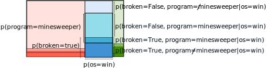

Bayes Rule And Naive Bayes Classifiers
Chris Tralie
First, click here to view notes by Grant Sanderson (aka 3Blue1Brown) on Bayes theorem. This is an inherently non-intuitive thing, but I think he does a really nice job of breaking the event space down visually.
Table of Contents
- Example 1: COVID Tests
- Example 2: Broken Computers
- General Bayesian Classification Framework
- Naive Bayes
Example 1: COVID Tests
Let's suppose there is a rapid test for COVID gives true positives 80% of the time; that is, if someone has COVID, it will register as positive 80% of the time and negative 20% of the time.
Conversely, the test gives "false positives" 1% of the time; that is, 99% of people who don't have COVID will test negative, but 1% of them will test positive.
Given that 1 out of every 1000 people has COVID and you test positive for COVID with the above test, what is the probability that you actually have COVID? It's fine to round your answer to two decimal places.
Solution
First, let's define our events:
- Let covid be the event that someone has covid, and ¬covid be the event that someone is healthy
- Let pos be the event that someone tests positive, and ¬pos be the event that someone tests negative
Based on what we're given, we can define a few probabilities as follows:
Prior Probabilities: Knowing nothing else, we can define the probabilities that a person picked at random will have covid or not
- p(covid) = 0.001
- p(¬covid) = 0.999
Likelihood / Observation Probabilities: We can define the conditional probability of a positive event given that a person has covid or not
- p(pos | covid) = 0.8; "true positive" rate
- p(pos | ¬covid) = 0.01; "false positive" rate
We actually want the events flipped around in the condition; that is, we want p(covid | pos). For this, we're going to use Bayes rule. Let's follow the procedure that 3Blue1Brown outlined to find the region of the Venn diagram that includes the event that we tested positive. We'll label all of probabilities we've defined so far (not necessarily to scale):
The event that we test positive is the L-shaped region of the diagram highlighted in blue. To find the conditional probability p(covid | pos), we need to find the ratio of p(pos | covid) to this full area. The picture below shows this equation visually, with the important terms labeled. Note that the area of the dark rectangles is base times height, which is prior probability times likelihood, respectively, in each case
If we plug in the terms we have, we end up with
\[ p(\text{covid} | \text{pos}) = \frac{(0.001)(0.8)}{(0.001)(0.8) + (0.999)(0.01)} \approx 0.0741 \]
This is surprisingly small! But that's because even with a small false positive rate, there are so many more people who don't have covid that the dark green term dominates the L.
Play around with the interactive sliders to adjust the probabilities. Do the results make sense given what we know above?
Below is an additional animation that Josh Brown made during our fall 2023 class:
Example 2: Broken Computers
Let's see how we would generalize this kind of logic to more than two classes.
Suppose I have a student post an anonymous message on discord saying that their computer is broken. I know that 70% of the class has macs, 20% of the class has windows, and 10% of the class has linux. I also know that macs are more reliable than linux, which is more reliable than windows; that is:
- Macs are broken 10% of the time
- Linux is broken 20% of the time
- Windows is broken 40% of the time
I'm pretty familiar with windows and linux, but I might need to brush up on my mac skills to fix the computer if it's a mac. What is the probability that the computer is a mac?
Solution
Let's now be more formal about something called a random variable, which is a variable that takes on values that we can map to events in the event space. In this case, we'll let our random variable for the unknown state be called os, and we'll have the following prior probabilities:
- p(os = mac) = 0.7
- p(os = windows) = 0.2
- p(os = linux) = 0.1
We'll now let the random variable for our evidence be broken. We then have the following conditional probabilities for the likelihood/observation probabilities:
- p(broken=True | os = mac) = 0.1
- p(broken=True | os = linux) = 0.2
- p(broken=True | os = windows) = 0.4
We can draw these events in a Venn diagram as we did before
The orange dotted line shows the region of the venn diagram corresponding to the evidence: broken = true. For the posterior probability we're interested in, we'll need the ratio of the dark red box to this region of the Venn diagram, which is composed of the sum of the dark red, dark blue, and dark green areas:
Or, written out as just an equation:
\[ p(\text{os}=\text{mac} | \text{broken}=\text{true}) = \frac{ p(\text{broken}=\text{true} | \text{os} = \text{mac})p(\text{os}=\text{mac}) }{ p(\text{broken}=\text{true} | \text{os} = \text{mac})p(\text{os}=\text{mac}) + p(\text{broken}=\text{true} | \text{os} = \text{windows})p(\text{os}=\text{windows}) + p(\text{broken}=\text{true} | \text{os} = \text{linux})p(\text{os}=\text{linux}) }\]
Plugging in terms from above, we have
\[ p(\text{os}=\text{mac} | \text{broken}=\text{true}) = \frac{ (0.1)(0.7) }{ (0.1)(0.7) + (0.4)(0.2) + (0.2)(0.1) } \approx 0.412\]
If we were to switch which posterior event we were looking at, we'd have the following for windows and linux:
\[ p(\text{os}=\text{windows} | \text{broken}=\text{true}) = \frac{ (0.4)(0.2) }{ (0.1)(0.7) + (0.4)(0.2) + (0.2)(0.1) } \approx 0.47\]
\[ p(\text{os}=\text{linux} | \text{broken}=\text{true}) = \frac{ (0.2)(0.1) }{ (0.1)(0.7) + (0.4)(0.2) + (0.2)(0.1) } \approx 0.118\]
Notice that these three numbers sum to 1, as they should since there are only three different types of computers that can be broken in this case (no students have brought me a turing machine yet...)
General Bayesian Classification Framework
In general, we have our hidden variable, which we'll call class, and our evidence variable, which we'll call obs (short for "observation"). Given that our class variable can take on N values c1, c2, ..., cN, we have the following expression for the posterior probability for each class given
- The prior probabilities p(class=ci)
- The likelihoods p(obs=y | class=ci)
Def. Posterior Probability
\[ p(\text{class}=c_i | \text{obs}=y) = \frac{\text{likelihood} \times \text{prior probability}}{\text{probability of evidence}} \frac{p(\text{obs=y} | \text{class}=c_i) p(\text{class}=c_i)}{ \sum_{j=1}^N p(\text{obs=y} | \text{class}=c_j) p(\text{class}=c_j) }\]
In a Bayesian classification problem, we want to guess the class that maximizes the posterior probability given the prior probabilities and likelihoods, as shown above. In other words:
Def. Maximum A-Posteriori Class Estimate
\[ \text{class} = \text{argmax}_{c_i} \text{ } p(\text{class}=c_i | \text{obs}=y) \]
In our example with the broken computers above, windows is the most likely option. Interestingly, this is different from the class that maximizes the prior probability; knowing nothing else, we'd guess that a student has a mac. But knowing in addition that the computer is broken, it is more likely to be windows than mac.
Saving Computation
Note that if we're trying to maximize the posterior proability, the probability of evidence is a constant over all terms. Therefore, we only need to pick the class that maximizes the expression in the numerator
Def. Maximum A-Posteriori Likelihood Class Estimate
\[ \text{class} = \text{argmax}_{c_i} \text{ } p(\text{obs=y} | \text{class}=c_i) p(\text{class}=c_i) \]
The result will be the same as the maximum a-posteriori class estimate.
Finally, if all prior probabilities are the same (i.e. being in any class is equally likely), then we have what's known as the maximum likelihood estimate
Def. Maximum Likelihood Class Estimate
\[ \text{class} = \text{argmax}_{c_i} \text{ } p(\text{obs=y} | \text{class}=c_i) \]
Naive Bayes
Suppose that we actually have multiple observations/pieces of evidence to go on. For instance, in the operating system example, suppose I knew both that the computer was broken and someone had just played minesweeper on that computer before it broke (perhaps the student sent me a picture of their frozen screen, and I noticed minesweeper on it). Let's add some additional likelihoods now about a different evidence variable program
- p(program = minesweeper | windows) = 0.5
- p(program = minesweeper | linux) = 0.02
- p(program = minesweeper | mac) = 0.01
Now the probabilities we're after are
p(os = c | broken = true, program = minesweeper)
If we were going to apply the above framework, there are really 4 disjoint events we'd have to consider for each class:
- broken=false, program ≠ minesweeper
- broken=false, program = minesweeper
- broken=true, program = minesweeper
- broken=true, program ≠ minesweeper
The picture below shows this scenario. Note how the 4 events break down visually due to overlap:
So we'd need more information than we're being given; we'd actually need the likelihoods for each class given these 4 events. However, if we're a bit lazy, we can make a key assumption: the different events are independent. What this means is that the joint probability of the two evidence variables is simply the product of the two evidence variables on their own:
\[ p(\text{broken} = y_1, \text{program}=y_2 | \text{class}=c) = p(\text{broken}=y_1 | \text{class}=c) \times p(\text{program}=y_2 | \text{class}=c)\]
This is what's referred to as the Naive bayes assumption. In other words, as someone pointed out on class, even if minesweeper was the thing that caused the computer to break, we assume the two events have nothing to do with each other (so it's an approximation). Let's define this formally in general now:
Def. Naive Bayes Maximum A Posteriori Estimate
Given k observation variables obsj and their associated values yj, then pick the class that maximizes the following probability:
\[ \text{class} = \text{argmax}_{c_i} \text{ } p(\text{obs}_1=y_1, \text{obs}_2=y_2, ..., \text{obs}_k=y_k | \text{class}=c_i) p(\text{class}=c_i) \]
which, under the naive bayes assumption, can be simplified to
\[ \text{class} = \text{argmax}_{c_i} \text{ } \left( p(\text{obs}_1=y_1 | \text{class}=c_i) p(\text{obs}_2=y_2 | \text{class}=c_i) ... p(\text{obs}_k=y_k | \text{class}=c_i) \right) p(\text{class}=c_i) \]
This is often written in a more compact way using Pi notation
\[ \text{class} = \text{argmax}_{c_i} \text{ } \left( \Pi_{j=1}^k p(\text{obs}_j=y_j | \text{class}=c_i) \right) p(\text{class}=c_i) \]
Notice how we've used the version that avoids the evidence in the denominator, as it's constant and wouldn't affect the result (and it would be a huge mess in this case).
In the above example, given the Naive bayes independence assumption, we have
p(broken = true, program = minesweeper | os = windows)p(os=windows)
Is equivalent to
p(broken = true | os=windows)p(program = minesweeper | os=windows)p(os=windows) = (0.4)(0.5)(0.2) = 0.04
For the other operating systems, we have:
p(broken = true | os=linux)p(program = minesweeper | os=linux)p(os=linux) = (0.2)(0.02)(0.1) = 0.0004
p(broken = true | os=mac)p(program = minesweeper | os=mac)p(os=mac) = (0.1)(0.01)(0.7) = 0.0007
Windows is clearly the one that maximizes this expression, with an even larger gap than before! So seeing minesweeper on the screen makes us even more certain that the broken machine was windows
Log Probabilities
One issue that we have as the number of evidence variables gets larger is that the probabilities get tiny, which could easily lead to numerical underflow. To combat this, we simply take the log of the probability, which doesn't change the relative rankings of the classes since the log is monotonic
\[ \text{class} = \text{argmax}_{c_i} \log( \text{ } \left( \Pi_{j=1}^k p(\text{obs}_j=y_j | \text{class}=c_i) \right) p(\text{class}=c_i) ) \]
Since log(AB) = log(A) + log(B), this turns into
\[ \text{class} = \text{argmax}_{c_i} \text{ } \left( \sum_{j=1}^k \log(p(\text{obs}_j=y_j | \text{class}=c_i)) \right) + \log( p(\text{class}=c_i) ) \]
In the above examples, we'd have:
- Windows: -3.22
- Linux: -7.82
- Mac: -7.26
As promised, Windows is still the maximum option